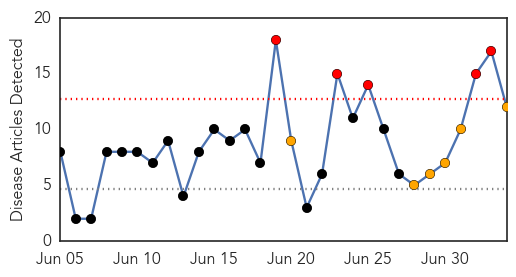
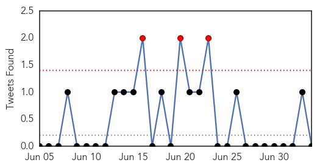
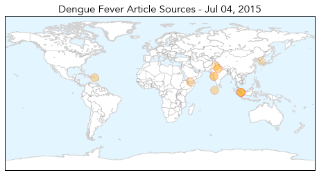
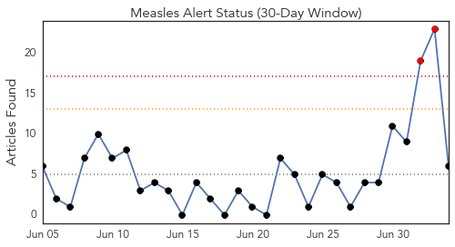
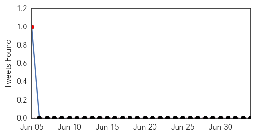
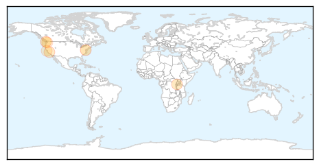
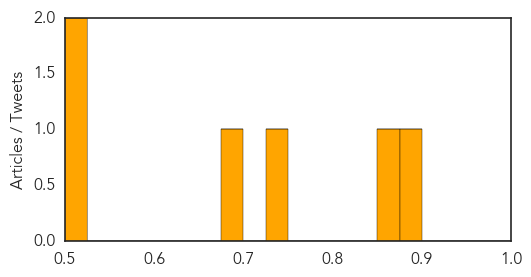

Dengue Fever
30-Day Web Trend
5 alerts, 6 warnings

30-Day Twitter Trend
2 alerts, 0 warnings

Article Locations
Article Confidences

Top Articles:
- 0.997
- Hundreds mobilized in campaign against dengue - Maldives
- 0.991
- Singapore dengue fever 2015: Increase in DEN-2 virus could make for a bad season
- 0.985
- City witnesses alarming rise in malaria, dengue cases
- 0.985
- Breakthrough- Antibody against DENV-2 identified and how Dengue virus evolves to spread efficiently
- 0.917
- Aden’s infirm dread a hospital visit most of all
- 0.911
- Vigilance urged as Taiwan ...｜Society｜WCT
- 0.845
- Dengue surveillance ordered during Eid holidays
- 0.842
- More dengue cases reported in Bishan North
- 0.738
- Dengue watch prompts ban on OTC sale of anti-inflammatory meds
- 0.692
- Asia Briefs: Dengue cases prompt warning in HK, Asia News & Top Stories
- 0.682
- Dengue preparedness: Over-the-counter sale of painkillers to be banned
- 0.644
- Leptospirosis kills 2 this month
Top Tweets:
-
No tweets found for Jul 04, 2015
Measles
30-Day Web Trend
2 alerts, 0 warnings

30-Day Twitter Trend
1 alerts, 0 warnings

Article Locations
Article Confidences
Top Articles:
- 0.877
- Woman Dies of Measles in Washington State
- 0.856
- CORRECTED VERSION — Clallam County woman's death by measles is first in nation in 12 years and first in state since 1990 -- Port Angeles Port Townsend Sequim Forks Jefferson County Clallam County Olym
- 0.725
- Yemen crisis deteriorates
- 0.699
- Woman’s death from measles is first in US since 2003
- 0.506
- Vaccination law critics hold protest at Golden Gate Bridge
- 0.506
- Clallam County woman who died from measles was vaccinated
Top Tweets:
-
No tweets found for Jul 04, 2015